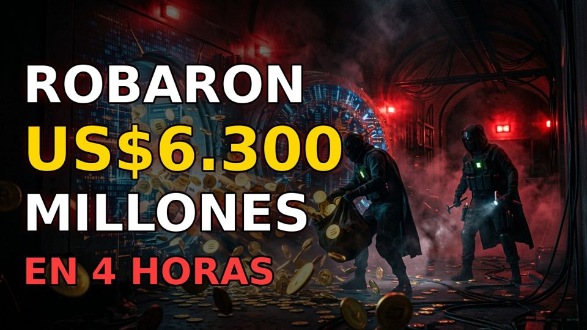

Últimos videos

Video
El robo cripto más grande de la historia: US$6.300 millones a Binance
🛢️
Short · Geopolítica
Minas y petroleros en llamas: lo que pasa en Ormuz
💻
Short · Hackers
Hackean a gigante japonés: 26.739 servidores en riesgo
De qué hablamos
⚔️ ConflictosGuerras y geopolítica de las últimas 48 horas.
🕵️ HackersCiberataques, estafas y espionaje reales.
🧠 Quiz5 preguntas para poner a prueba lo que sabes.
🌌 MisteriosCiencia, espacio e historia curiosa.
Nuevos videos lunes, miércoles y viernes. Cada historia se basa en fuentes abiertas y verificadas.